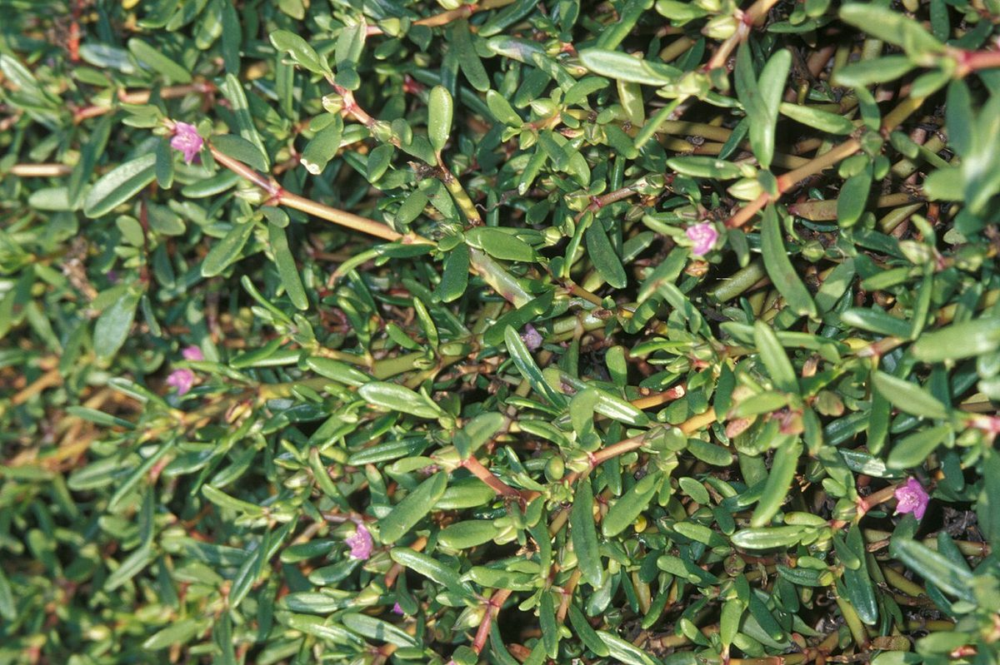
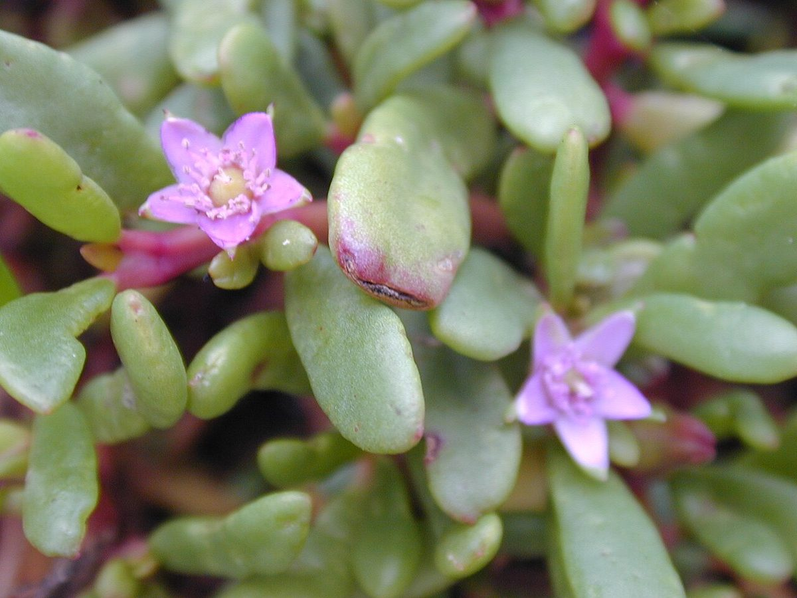
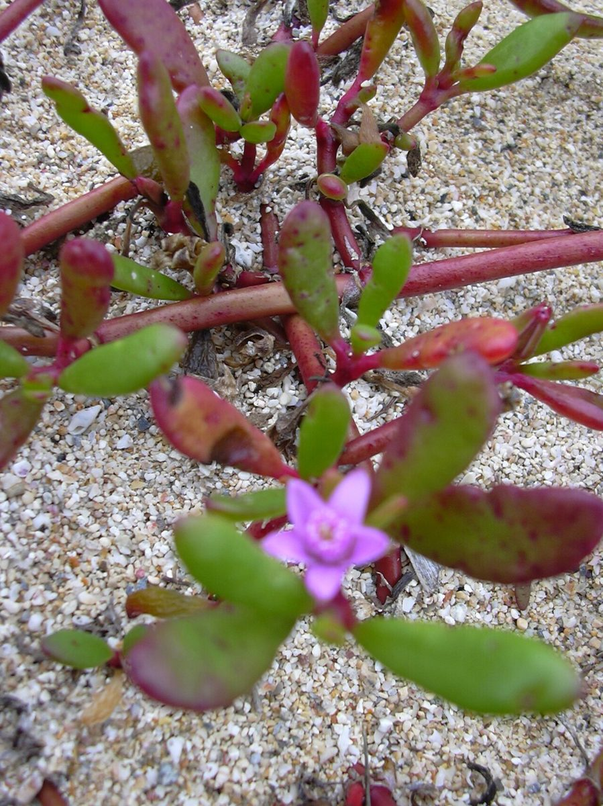

COMMON Beach strand
Sesuvium portulacastrum
ʻākulikuli kai, ʻākulikuli · sea purslane, shoreline seapurslane



Quick facts
| Family | Aizoaceae |
|---|---|
| Scientific name | Sesuvium portulacastrum |
| Hawaiian name(s) | ʻākulikuli kai, ʻākulikuli |
| English name(s) | sea purslane, shoreline seapurslane |
| Status | Indigenous (native, non-endemic) |
| Conservation | — |
| Coastal zones | Beach strand |
| Occurrence | A prostrate succulent mat of saline back-beach flats, salt pans, and the upper strand where fresh water and salt water mix. On the roadless Kauaʻi coast it is most conspicuous behind sandy strand at Māhāʻulepū and on stabilized flats above the tideline at Kalalau and Miloliʻi; pantropical. |
How to identify
- Growth form
- Long-lived prostrate succulent perennial forming dense mats to several metres across; branches root at nodes and radiate outward from a woody rootstock.
- Size
- Mats to 2 m across; stems only a few cm above the substrate.
- Leaves
- Opposite, fleshy, oblong to lanceolate, 2–5 cm long, smooth and hairless. In sun-exposed plants the leaves and stems flush distinctly red-purple; in shaded plants they stay green.
- Flowers
- Solitary and axillary, pink to purple, star-shaped, 8–15 mm across, with 5 pointed lobes. What look like petals are actually coloured sepal lobes — the family Aizoaceae typically lacks true petals. Flowers open in bright sun.
- Fruit / seed
- A small capsule opening by a circular lid (circumscissile), 4–5 mm, releasing tiny black seeds.
- Bark / stem
- Fleshy jointed stems, often flushed red; woody only at the extreme base of old plants.
- Where it sits on the coast
- Saline flats, back-beach, and the upper edge of coastal salt marsh. Not on active dune faces or bare sea-cliff rock.
Clinchers (features that lock the ID)
- Prostrate succulent mat with fleshy opposite leaves — the whole plant is glossy and often flushed red.
- Solitary pink-purple 5-lobed axillary flowers open in the sun (coloured sepals, no true petals).
- Salt flat / back-beach habitat, not on dry cliff or bare sand dune.
Look-alikes
- Portulaca lutea (ʻihi) — ʻIhi has alternate cylindrical (terete) leaves and bright yellow flowers, versus ʻākulikuli kai's opposite flattened-oblong leaves and pink-purple flowers. The two often grow near each other on offshore islets.
- Batis maritima (pickleweed, naturalized) — Batis has jointed, segmented stems with small paired scale-like leaves and tiny greenish cone-like inflorescences, not showy pink-purple flowers. Both share saline-flat habitat.
Ecology
Extreme halophyte and pioneer of hypersaline substrates where few other flowering plants can grow. Its succulent tissues accumulate sodium and store fresh water, and its mats bind loose salt-flat sediment, initiating soil formation. [16], [21], [22], [27]
Cultural significance
The succulent stems and leaves have historically been eaten in coastal Hawaiian cuisine as a pot-herb; preparation belongs to Hawaiian food- culture practitioners and is not detailed here.